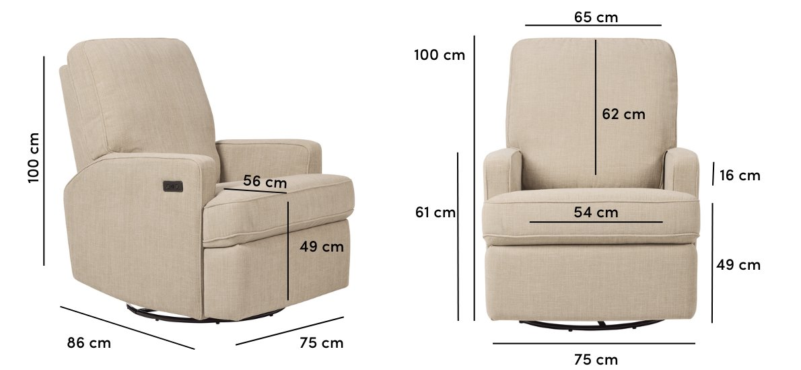

01Same angle, all four
Swipe the photos or use the arrow keys to change angle.Studio shots (the first six angles) were re-centred and scaled to a common silhouette so they line up; the room and close-up shots are each fabric's own photo of a similar scene, so framing differs.
02Head to head
Drag across the photo to wipe between the two.03Fabric, up close
il Tutto's own swatch photos, cropped to the cloth.Perceived colour shifts with what is around it, so try all three surrounds. These are product photos viewed on your screen, not a calibrated match; il Tutto offers free fabric swatches from each product page if the decision is close.
04What actually differs
As stated on each product page. Scroll the table sideways on a phone.Not visible in the copy but visible in the photos: the Eggshell and Pure Grey chairs are pictured with a light grey control panel on the side, the Latté and Vanilla Bouclé chairs with a dark one. The site does not say whether this differs in the chair you receive.
Shared by all four
- Height
- 100 cm
- Width
- 75 cm
- Depth
- 86 cm
- Seat height
- 49 cm
- Seat width
- 54 cm
- Seat depth
- 56 cm
- Arm height
- 61 cm (16 cm above seat)
- Backrest
- 62 cm tall, 65 cm wide
- Max. weight
- 130 kg
- Power cord
- 2.5 m
- Full recline
- about 15 seconds
- Warranty
- 1 year from purchase, proof of purchase required
Dimensions read off il Tutto's labelled drawing, which is identical for all four fabrics.
- Electric recline at the touch of a button
- 180° swivel each way, plus a gentle rocking and gliding motion
- Built-in USB and USB-C charging ports
- STANDARD 100 by OEKO-TEX® certified fabric (test report 21.0.84380)
- Wide, cushioned backrest; wider seat base
- Free standard delivery to metro suburbs (excluding Perth, Hobart, ACT and Darwin), to the door, no stairs
- Assembly instructions (PDF)
Care (same for every fabric)
- Stain-guard the chair (il Tutto's recommendation)
- Keep out of direct sunlight and heat
- Vacuum regularly
- No bleach or harsh chemicals
- Blot surface stains quickly without rubbing them in
- Some fabrics pill; de-pilling is part of normal upkeep
